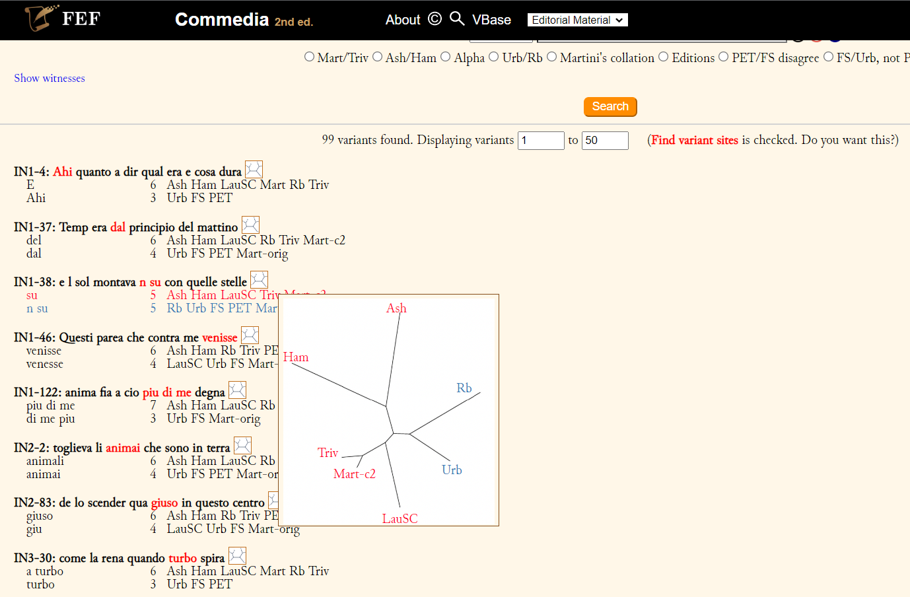

Chiara Martignano
Esempio: Petrarchive, TEI Boilerplate
Esempi di sistemi per l'elaborazione e la pubblicazione di edizioni digitali
Esempio: 2^ edizione della Commedia a cura di Prue Shaw
Strumenti di pubblicazione creati per documenti TEI o TEI-compatible